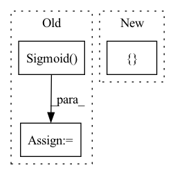

Pattern ID :645

Before Change
nn.init.kaiming_normal_(to.zeros([number_of_node_features, number_of_node_features], device=self.device)),
requires_grad=True)
self.linear = to.nn.Linear(self.fully_connected_layer_input_size, self.fully_connected_layer_output_size)
self.sigmoid = to.nn.Sigmoid()
def forward(self,
node_features: to.Tensor,
adjacency_matrix: to.Tensor,
After Change
to.empty([number_of_node_features, number_of_node_features]),
requires_grad=True)
self.linear_weight = nn.Parameter(
to.empty([self.fully_connected_layer_output_size, self.fully_connected_layer_input_size]),
requires_grad=True)
self.linear_bias = nn.Parameter(
to.empty(self.fully_connected_layer_output_size),
In pattern: SUPERPATTERN
Frequency: 3
Non-data size: 3
Instances
Fragment ID: 1574201
Project Name: kovanostra/message-passing-neural-network
Commit Name: 224aa203226b03e6df47c62d924fc2fa07949d05
Time: 2020-05-30
Author: kovanostra@gmail.com
File Name: message_passing_nn/model/graph_rnn_encoder.py
Class Name: GraphRNNEncoder
Method Name: __init__
Parent Class: nn.Module
Fragment ID: 1574193
Project Name: tky823/dnn-based_source_separation
Commit Name: 87afd25f53e66db234ad9349e8fdedc0061d33b1
Time: 2021-11-13
Author: delta9guitar97@gmail.com
File Name: src/models/dptnet.py
Class Name: Separator
Method Name: __init__
Parent Class: nn.Module
Fragment ID: 1574195
Project Name: tky823/dnn-based_source_separation
Commit Name: 6333394de0e49d076fa5e5f6d06d7f145ec8bcec
Time: 2021-11-22
Author: delta9guitar97@gmail.com
File Name: src/models/danet.py
Class Name: DANet
Method Name: __init__
Parent Class: nn.Module